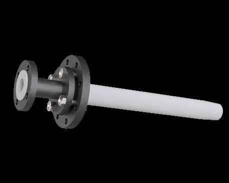
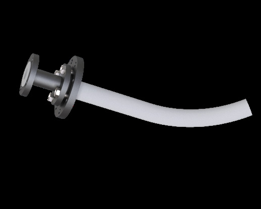

Dip Pipes & Dip Legs


Curved lined dip pipe, NB 1" to 6", bend radius from 500 mm
Lined dip pipe with a formed curve at the lower end, directing discharge away from the agitator or towards the vessel wall. NB 1" to 6", minimum bend radius 500 mm.
| Product type | Curved lined dip pipe |
|---|---|
| Body / steel grade | ASTM A 106 Gr. B pipe, IS 2062 plate / ASTM A 105 flanges |
| Lining material | PTFE |
| Liner standard | ASTM D 1457 / ASTM D 4894-19 |
| Lining options | Virgin or anti-static (conductive black) PTFE to ASTM D 4894 & D 4895, PFA to ASTM D 3307, FEP to ASTM D 2116 |
| Flange standard | ASME/ANSI B16.5 |
| Flange class | Class 150 standard; Class 300 on request |
| Size range | NB 1" to NB 6" on NB 1.5" to 24" nozzles |
Product overview
A curved dip pipe turns the discharge at the bottom of its length, which is how you direct flow away from an agitator shaft, along the vessel wall to promote mixing, or towards a specific zone of the batch. A straight dip pipe discharging into an agitator can cause splashing and shaft loading.
The catalogue adds a bend radius column R to the standard dip pipe table: 500 mm minimum for NB 1" to 4", rising to 800 mm at NB 6". Everything else — face to face, minimum and maximum length, lining — matches the straight dip pipe.
Features
Benefits
Applications & industries
Technical data
Figures below are for this product only — every item in the range carries its own dimension table.
| Product type | Curved lined dip pipe |
|---|---|
| Body / steel grade | ASTM A 106 Gr. B pipe, IS 2062 plate / ASTM A 105 flanges |
| Lining material | PTFE |
| Liner standard | ASTM D 1457 / ASTM D 4894-19 |
| Lining options | Virgin or anti-static (conductive black) PTFE to ASTM D 4894 & D 4895, PFA to ASTM D 3307, FEP to ASTM D 2116 |
| Flange standard | ASME/ANSI B16.5 |
| Flange class | Class 150 standard; Class 300 on request |
| Size range | NB 1" to NB 6" on NB 1.5" to 24" nozzles |
| Temperature range | Continuous service to 260 °C (PTFE melting point 327 °C, PFA 306 °C, FEP 260 °C) |
| Pressure rating | ASME/ANSI B16.5 Class 150 flanges as standard; Class 300 available on request |
| Manufacturing standard | ASTM F 1545 |
| Spark testing | Every lined component spark tested at 5000 × E volts (E = liner thickness in mm), to a maximum of 15 000 V |
| Hydro testing | Hydrostatic or pneumatic test according to the lining technique; hydrostatic test on components with vent holes |
| Inspection | Dimensional and visual examination of liner and steel parts — weld aspect, overall dimensions, collar size, liner thickness, surface flaws and paint thickness |
| Vent holes | 3 mm diameter vent holes — one per fitting; spools under 500 mm get a single central hole, spools over 500 mm get two holes about 150 mm from each end |
| External protection | Zinc epoxy primer, minimum 60 μm dry film, over steel sand-blasted to SA 2.5 |
| Certification | EN 10204 3.1 mill certificates and FDA certification for the fluoropolymer available on request |
| Standard version | Straight dip pipe with formed curve |
| Bend radius | 500 mm minimum to NB 4"; 800 mm at NB 6" |
| NB₁ | NB₂ | Face to face X (±2) | Length min (±2) | Length max (±2) | Bend radius R min (±2) | PTFE |
|---|---|---|---|---|---|---|
| 1" | 1.5"–24" | 150 | 150 | 5800 | 500 | ✓ |
| 1.5" | 2"–24" | 150 | 150 | 5800 | 500 | ✓ |
| 2" | 3"–24" | 150 | 150 | 5800 | 500 | ✓ |
| 2.5" | 3"–24" | 150 | 200 | 5700 | 500 | ✓ |
| 3" | 4"–24" | 150 | 200 | 5700 | 500 | ✓ |
| 4" | 6"–24" | 150 | 200 | 5700 | 500 | ✓ |
| 6" | 8"–24" | 150 | 300 | 3000 | 800 | ✓ |
All dimensions in mm. R is the minimum bend radius — a tighter radius would thin the liner on the outside of the curve.
FAQ
The catalogue gives 500 mm as the minimum for NB 1" to 4" and 800 mm at NB 6". A tighter radius risks thinning the liner on the outside of the curve, which is why the limit exists.
Yes. Send the vessel arrangement with your enquiry, showing the nozzle position, the agitator and the direction you want the discharge to face.
Enquiry
Send the bore, the media, the temperature and pressure, and the flange standard you work to. Drawings and custom sizes welcome.
Send your requirement — media, temperature, pressure, dimensions — and we'll recommend the right product or fabricate it.
Talk to an engineer